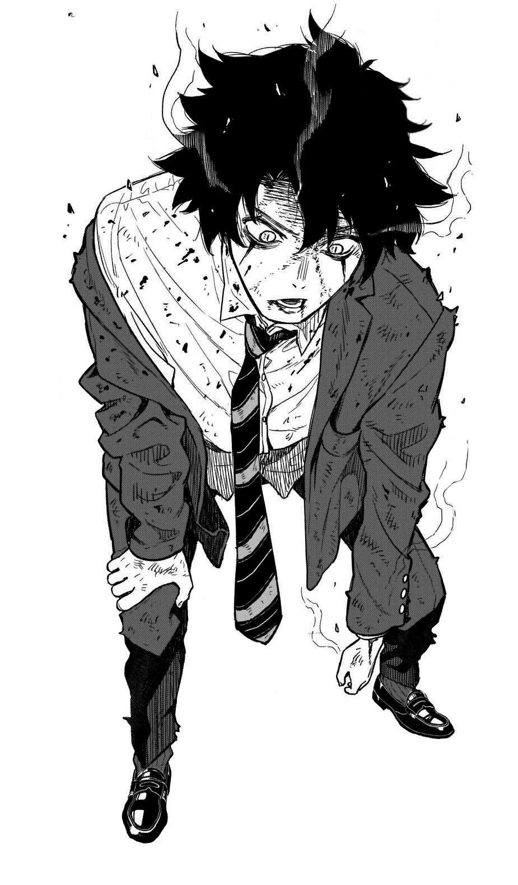
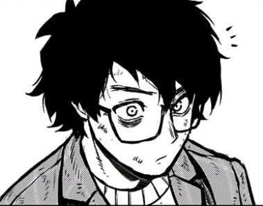
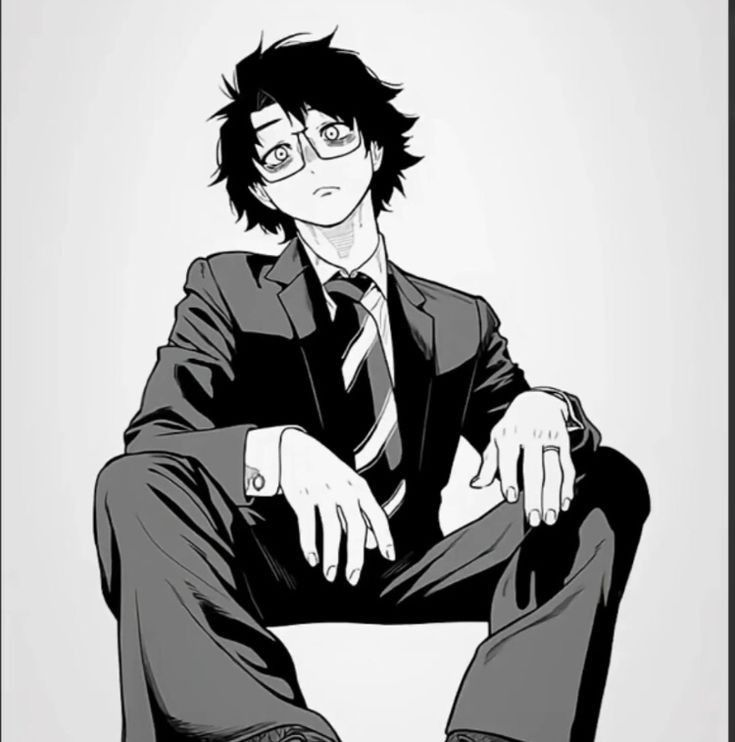

Хэйсукэ Масимо
Клан Камо

Возраст: 16 лет
Рост:170
Вес: 58
Пол: Мужской
Телосложение: необходимый минимум
Национальность место место рождения
Работа
Инвентарь
Одежда
Очки со стеклом, которые ослабляют видимость проклятой энергии невелируя Гиперчувствительность глаз.
Классическая офисная одежда
Набор камуфляжной одежды для города
Проклятые орудия и предметы
125-мм ампуломёт образца 1941 года. Макс дальность 500 метров

40 ампул АЖ-2 с кровью для Ампуламёта, кровь в них не сворачивается раньше времени, тк как внутри кислород заменён на Азот. Кровь разумеется проклятая
12 mm холостые ружейные потроны для выстрела ампул
Тепловизионный прицел TU420 выполнен в классическом форм факторе дневного оптического прицела, если смотреть со стороны, GUIDE TU420, то выглядит как обычный дневной прицел. Прицел элегантен, легок красив. Благодаря продуманной системе питания время работы прицела примерно десять часов. Прицел устанавливается на оружие с помощью колец диаметром 30 мм. Тепловизионный сенсор прицела собственной разработки GUIDE с разрешением 400*300 пикселей , объектив 25 мм. Благодаря системе профилей тепловизионный прицел GUIDE TU420 позволяет сохранить десять точек пристрелки.
Дальность обнаружения по ростовой фигуре - 700 м.
- Разрешение 400×300
- Объектив 25mm
- Поле зрения 15.49°×11.65°
- Увеличение 1.6×~6.4×
- Прицельные сетки в количестве 10 штук
- Цветные палитры для визуализации изображения
- Профили пристрелки 10
- Цветной HD OLED дисплей 1024*768
- Фото и видеозапись
- Подключение к смартфону по Wi-Fi
- Время работы от батарей 10 часов

ВССК «Выхлоп». Российская бесшумная снайперская винтовка. Создана она была в 2002 году, имеет калибр 12,7 мм. Главными задачами оружия были поражение целей на расстоянии до 600 метров малошумным и беспламенным выстрелом. Патронов здесь используется три особых типа с дозвуковой скоростью пули на дистанции не менее 100 метров. Винтовка имеет съёмный и интегрированный глушитель, магазин ёмкостью 5 патронов. Дальность стрельбы - 600 метров.

Патроны 12,7×55 мм серии СЦ-130. 5 магазинов по 5 патронов. Сердечник пуль заменён на железный, железо достано прямиком из крови владельца
Предметы роскоши
Телефон, и макбук
Проклятые техники
МАНИПУЛЯЦИЯ КРОВЬЮ
Фундаментальная техника великого клана [Камо]. Она позволяет пользователю подчинять своей воле каждую каплю собственной крови, напитывая её проклятой энергией для превращения в смертоносное оружие, способное менять форму и свойства по желанию мастера.
Техника обладает колоссальной гибкостью. Путем [Сжатия] и придания формы вы можете создавать сложнейшие приемы. Например, легендарное «Пронзающее Кровь» — это кровь, прошедшая через экстремальное давление и выпущенная на сверхзвуковой скорости. Характеристики вашей крови напрямую зависят от ваших статов и общего усиления тела.
Ключевые усиления и особенности:
— [Текущая Красная Чешуя] — внутренняя манипуляция, разгоняющая кровоток. Дарует бафф +3 буквы к скорости и +4 буквы к прочности.
— [Ядовитая Кровь] — для проклятых духов ваша кровь является смертельным ядом. 1 литр при попадании внутрь ослабляет духа на букву, а 4 литра гарантируют мгновенную [Смерть].
— [Творческая Свобода] — техника позволяет создавать любые кастомные приемы через анкету без необходимости написания тренировок.
Механика Сжатия: Сила атаки напрямую зависит от времени подготовки. За один пост вы [Сжимаете] 50% объема крови. При достижении 100% Сжатия ваше «Копье Крови» получает начальную скорость [SS+], а его сила увеличивается на +1 букву сверх ваших текущих показателей и усилений. Однако, не попав по цели в начале, пользователь [Копья Крови] не попадет вновь, как бы не старался.
Важно! Помните о биологических лимитах. Кровь в вашем организме не бесконечна. Чрезмерное использование внешних техник без должного контроля или специальных запасов может привести к летальной анемии.
[Затраты]: 10 У.Е. за управление 1 литром крови.
[Затраты]: 50 У.Е. в пост за поддержание [Красной Чешуи].
Кровавый туман
При примении техники кровь распыляется во все стороны, 1 литр крови распыляется на 15 м радиуса купалом создавая прозрачный кровавый туман, который слегка ограничивает видимость.
Однако туман блокирует восприятие проклятой энергии, снижая эту стату на ранг а может 2. При этом туман остаётся на месте и нанего слабо влияет природный ветер. Проклятья будут задыхаться в этом тумане, словно
их плавит туман тк как для них кровь Камо проклята. Кровь не газ, и не испарение, а аэрозоль в этом состоянии. Аэрозоль — это:
мельчайшие жидкие капли или твёрдые частицы, взвешенные в газе.
[Затраты]: 10 У.Е. за управление 1 литром крови. И еще 10 за поддержание.
Дальность крайне существенна до 500 метров
Изменение направление пули и вращение
Даёт возможность всячески менять направленние пули, пока она в движется в среде кровавого тумана. Так же задавать возможное направленние рикошета. Увеличивать пробивную способность пули, посредством придачи ей быстрого вращения.
Запас и свойство проклятой энергии
Запас 1800 У.Е. Свойство отсутствует
Трейты персонажа.
- Ethereal eye
- Мастер огневого вооружения
- Псевдопушка
Умения/навыки
- Оружейный инженер: Вы досконально знаете устройство большинства видов вооружения (автоматы, пистолеты, ПП). Если ваша [Техника] связана с огнестрелом или созданием оружия, её общая мощь усиливается на 2 ранга.
- Стрелковая специализация: Ваша точность и понимание баллистики делают дистанционный бой вашей абсолютной стихией, превращая обычные пули в угрозу для проклятий.
- Минимальные навыки кулинарии для выживания, и навык быстрого ореинтирования на незнакомой местности
- Навыки выживания в дикой местности
Потенциал: Обычный
Слабости
- Псевдо-пушка крайне неэффективна в затяжных боях. Высокие траты на мощные залпы быстро истощают резерв, а отсутствие пассивного усиления выброса делает вас уязвимым в моменты между выстрелами.
- Гиперчувствительность: Из-за совершенного строения ваши глаза крайне восприимчивы к резким и очень ярким визуальным эффектам. Световые гранаты или вспышки техник воздействуют на вас значительно сильнее, чем на обычных людей.
- Слабость вблизи: Весь ваш прогресс был направлен на стрельбу, поэтому как ближний боец вы слабы. Сражения вплотную понижают силу на 2 ранга.
- Изгой традиций: Клан насмехается над вашими методами, считая вас безумцем, идущим против древних устоев магического общества.
Характер/Личность
Хэйсукэ Масимо — человек удивительного баланса между прагматизмом и живостью характера. Вопреки репутации изгоя из клана Камо, он вовсе не замкнутый и не мрачный тип. Напротив — в компании он держится легко, умеет поддержать разговор и почти всегда улыбается. Его улыбка, правда, редко бывает полностью искренней: в ней всегда чувствуется расчёт, словно он одновременно оценивает обстановку, людей и потенциальную выгоду.
Для консервативных Камо огнестрел — символ слабости, признание зависимости от инструментов, а не от чистоты техники. Но Хэйсукэ мыслит иначе. Он считает, что проклятая энергия — лишь ресурс, а любой ресурс должен приносить прибыль.
Хэйсукэ не стремится к признанию клана и не жаждет силы ради власти. Его цель проста и холодна — финансовая независимость. Деньги дают свободу от фамилии, от традиций, от долга крови.
При этом он вовсе не жадный в бытовом смысле. Он может угостить друзей ужином, оплатить общие расходы или одолжить средства без процентов — если считает, что это укрепляет связи. Его одержимость финансовым благополучием направлена прежде всего на долгосрочную стабильность. Хэйсукэ ненавидит зависимость. Зависимость от клана, от преподавателей, от миссий, навязанных сверху. Деньги для него — инструмент свободы.
Он дисциплинирован и методичен. Перед заданием он изучает детали, просчитывает риски, составляет запасные планы. Но вне работы он неожиданно расслаблен: любит современные технологии, следит за рынком, интересуется инвестициями, может с энтузиазмом обсуждать экономику и стартапы. В такие моменты в нём просыпается подросток, которому просто интересно строить своё будущее.
В общении он ироничен, иногда язвителен, но редко переходит грань. Он умеет слушать, особенно если чувствует, что собеседник обладает полезной информацией. Однако его эмпатия избирательна: если человек представляет угрозу его стабильности, Хэйсукэ без колебаний дистанцируется или использует ситуацию в свою пользу.
Несмотря на рациональность, в нём есть азарт. Он любит сложные задачи, любит ощущение идеально выполненной работы. Внутри «Кровавого тумана» он ощущает не мрак, а концентрацию — почти спортивный интерес к точности. Для него это не убийство ради насилия, а демонстрация мастерства. Доказательство того, что все вокруг были не правы
Хэйсукэ не стремится к разрушению мира и не жаждет власти. Он хочет жить комфортно, независимо и богато. И если путь к этому лежит через соблюдение правил — он будет законопослушен. Если правила можно обойти легально — он найдёт способ. Если нет, то спокойно перейдет черту если это стоит того
Биография
Хэйсуке родился не с серебряной ложкой, а с винтовкой в руках.
Его полное имя — Хэйсуке Камо. Однако в документах магического техникума он записан как Хэйсуке Масимо — по фамилии матери, Аки Масимо. Его отец, Рюдзи Камо, не унаследовал клановую технику и родился слабым шаманом. Клан отвернулся от него. Рюдзи ушёл в мир обычных людей, служил в армии, получил тяжёлую травму на операции и был списан. Вернувшись, он стал охотником — и в лесу, и в городе. Иногда — на проклятия.
Пули он напитывал собственной проклятой энергией. Этого хватало лишь на слабых духов, но для семьи — на жизнь.
Хэйсуке рос в бедности. Мать не знала, кем на самом деле был её муж. Клан не помогал. Зато отец учил.
— Дыхание ровное. Палец не дёргай, — тихо говорил Рюдзи, ставя руки сына на приклад.
— Я вижу цель. Слишком чётко, — отвечал мальчик, щурясь.
— Тогда научись видеть меньше. Солдат не тот, кто видит всё. А тот, кто видит нужное.
В 10 лет Хэйсуке впервые выстрелил в проклятие. В 14 — уже работал с тепловым прицелом. Его зрение было аномально острым; яркие вспышки причиняли боль, поэтому он носит очки с ослабляющими линзами.
Ирония в том, что он унаследовал клановую технику Камо — «Манипуляция Кровью», а после придумал как ей воспользоваться на собственный манер.Внутри алой взвеси его пули меняют траекторию, закручиваются с чудовищной силой и пробивают защиту, словно сверло. Снайперская бесшумная винтовка стала продолжением техники крови — позором для клана и символом его упрямства.
Организация
Магический Техникум 1 Курс
Капитал
Миллион Йен
Внешность


